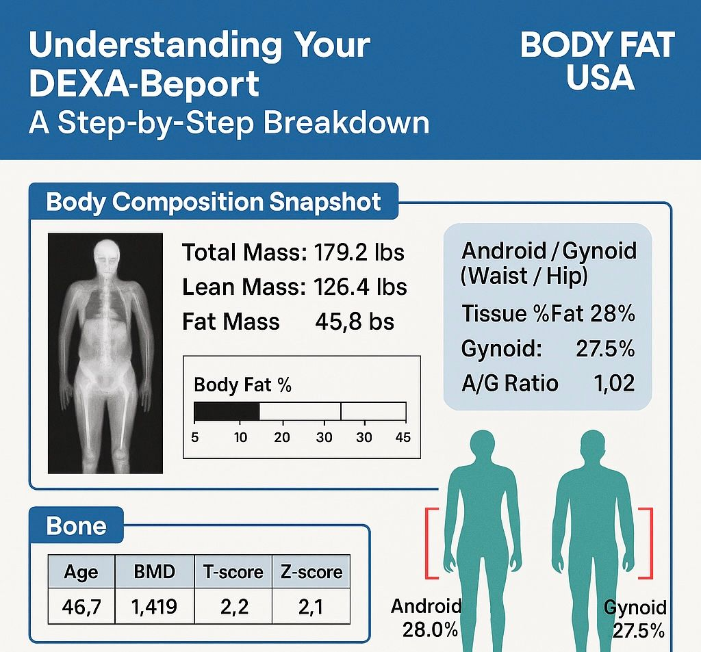

How to Read Your DEXA Scan Results Like a Physiologist She spent maybe $200 on the whole setup.
08 How to Read Your DEXA Scan Results Like a Physiologist
You’ve done it. You booked a DEXA scan, sat in the waiting room, lay on the table, and received a PDF that looks like it belongs in a medical journal. Now what? The first time I read a DEXA report, I was overwhelmed. There were columns and rows, colored maps of my body, numbers with decimal places.
I had a master’s degree in kinesiology and I still had to read the manual. Twice. Let me walk you through a real DEXA report, section by section. Not every page. Just the numbers that matter. Total body fat percentage
This is the number most people look at first. It’s your total body fat divided by your total mass. For a 150-pound person with 30 pounds of fat, that’s 20%. The healthy ranges from the American Council on Exercise (ACE) are a good starting point. For women: essential fat 10-13%, athletes 14-20%, fitness 21-24%, acceptable 25-31%, obese 32%+. For men: essential fat 2-5%, athletes 6-13%, fitness 14-17%, acceptable 18-24%, obese 25%+. But total body fat alone doesn’t tell the whole story. Where you carry that fat matters. The Lean Body Mass Calculator can help you break down your total mass.
Regional fat – arms, legs, trunk DEXA divides your body into regions. A healthy pattern is more fat in the legs and hips (gynoid) and less in the trunk (android). The trunk includes your abdomen and chest. High trunk fat is associated with higher metabolic risk, even if your total body fat is normal. Some DEXA reports also show an android/gynoid ratio. A ratio above 1.0 for men or 0.85 for women suggests central fat distribution, which is linked to heart disease and diabetes. I had a client named Lena. Her total body fat was 28% – acceptable range. But her trunk fat was 35% of her total. Her android/gynoid ratio was 0.95. That’s high for a woman. She was at higher risk than her total body fat suggested. Visceral adipose tissue (VAT)
This is the most important number on the report that most people overlook. Visceral fat is the fat stored around your organs. You can’t see it. You can’t pinch it. It’s deep inside. It secretes inflammatory chemicals. It’s linked to insulin resistance, heart disease, stroke, and some cancers. The thresholds are usually given in grams, liters, or cm². Below 100 cm² (about 0.1 liters) is low risk. 100-160 cm² is moderate. Above 160 cm² is high risk. Lena’s VAT was 140 cm² – moderate. That explained why her android/gynoid ratio was high. She wasn’t visibly fat. She had a flat stomach. But inside, she was storing dangerous fat. The BMI vs Body Fat Analyzer can’t measure VAT, but it can show you if you’re at risk based on BMI and body fat.
Bone mineral density (BMD) DEXA is also the gold standard for bone density. Your report will show BMD in grams per square centimeter, plus a T‑score and Z‑score. The T‑score compares your bone density to a healthy 30-year-old of the same sex. Above -1.0 is normal. Between -1.0 and -2.5 is osteopenia (low bone density). Below -2.5 is osteoporosis. The Z‑score compares you to others of the same age and sex.
A Z‑score below -2.0 is concerning. Lena’s T‑score was -1.5. She had osteopenia. She was 45. Her doctor hadn’t mentioned it. She started lifting heavier and taking vitamin D. A year later, her T‑score improved to -1.2. Lean mass She exhaled. It came out shaky. She hoped he didn't notice.
This is your muscle, organs, and connective tissue – everything that’s not fat or bone. Tracking lean mass over time tells you whether you’re gaining muscle or losing it. Low lean mass predicts functional decline and mortality in older adults. For younger adults, it’s a marker of training progress.
Lena’s lean mass was 95 pounds at 5’4”. That’s low. She started resistance training and increased her protein. Six months later, her lean mass was 102 pounds. How to use your DEXA results If you have high total body fat and high trunk fat, your priority is fat loss through a moderate calorie deficit and resistance training. Don’t starve yourself. Keep protein high. If you have normal total body fat but high visceral fat, your priority is stress management, sleep, and dietary changes (reducing refined carbs and alcohol), plus resistance training. Visceral fat is responsive to lifestyle changes – more so than subcutaneous fat.
If you have low lean mass, your priority is protein and progressive overload training. Lift heavy. Eat enough. If you have low bone density, your priority is weight‑bearing excercise, calcium, vitamin D, and maybe medication. Talk to your doctor. What DEXA doesn’t tell you
DEXA doesn’t measure hydration status, so a dehydrated person may appear to have higher body fat. It doesn’t distinguish between intramuscular fat and lean mass – that’s a small error, but it exists. The error for lean mass is about ±2-3%, for fat mass about ±1-2%. DEXA also doesn’t tell you about your fitness level, cardiovascular health, or mobility. It’s one piece of the puzzle. How often to scan
Every 6-12 months for general tracking. Every 3-4 months if you’re in a structured recomposition or competition prep. More frequent than that, the change will be smaller than the error margin. Lena scanned every six months. Her first scan showed 28% body fat, 140 cm² VAT, T‑score -1.5. Six months later, after lifting weights and changing her diet, her body fat was 25%, VAT 110 cm², T‑score -1.3. She was moving in the right direction. The bottom line
DEXA is the best accessible tool for body composition, but it’s only useful if you understand the numbers. Don’t just look at total body fat. Look at visceral fat. Look at lean mass. Look at bone density. Track changes over time, not absolute numbers. Lena’s doctor never ordered a DEXA. She did it herself. She brought the results to her annual physical. Her doctor was impressed. “I wish more patients did this,” he said. You can too.